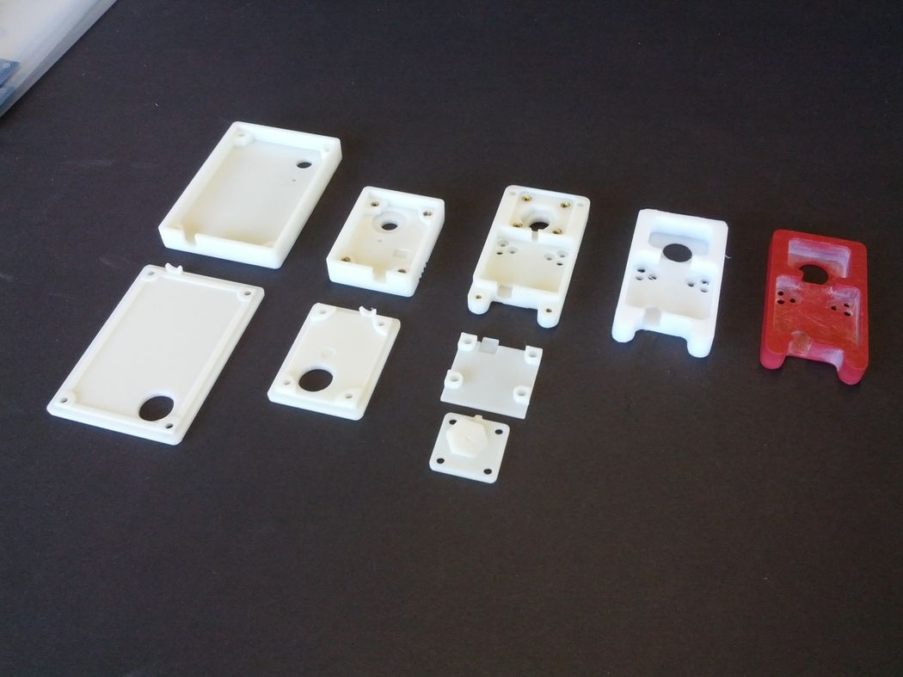
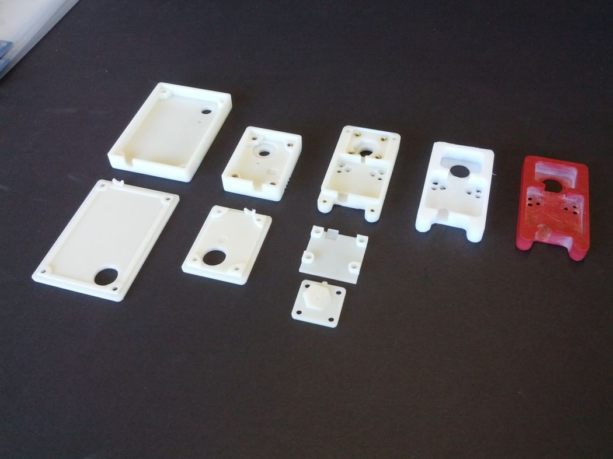

UAV Appliqué Antennas
2012–2016
A series of various conformal and appliqué antennas for retrofitting onto existing UAV platforms. I developed a new matching network configuration that used pogo pins to eliminate soldered connections and allow in-situ installation that minimizes aircraft modification. In most cases, the matching network housings had to be iteratively prototyped using additive manufacturing before settling on a final version to be machined from fiberglass reinforced plastic (FRP).
 
